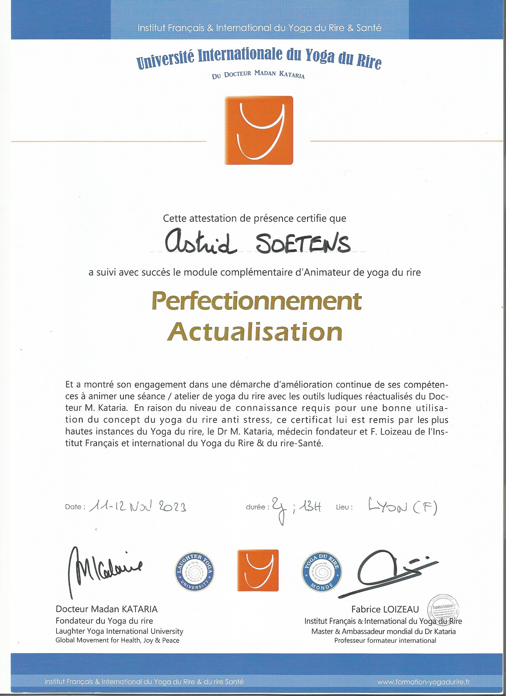
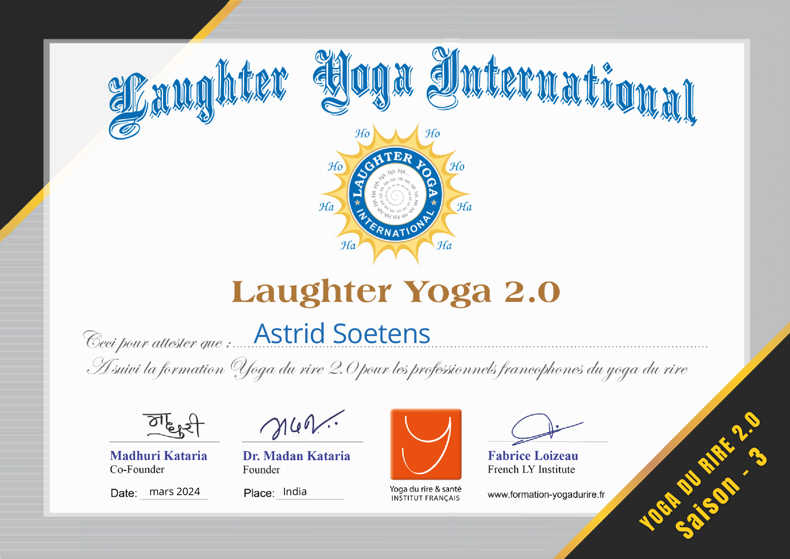
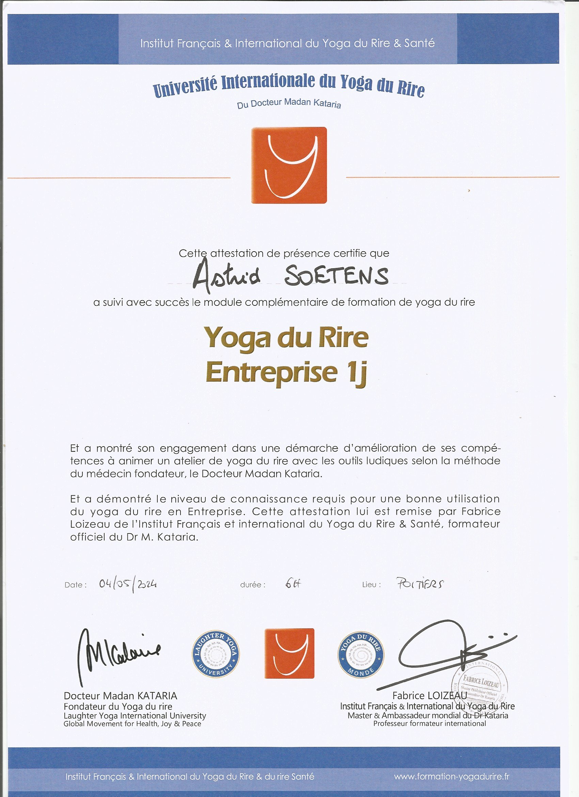
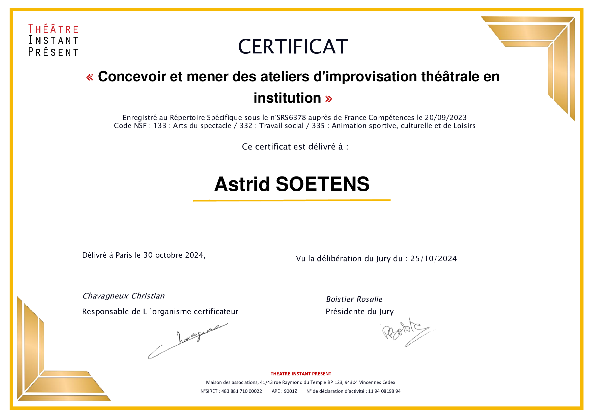
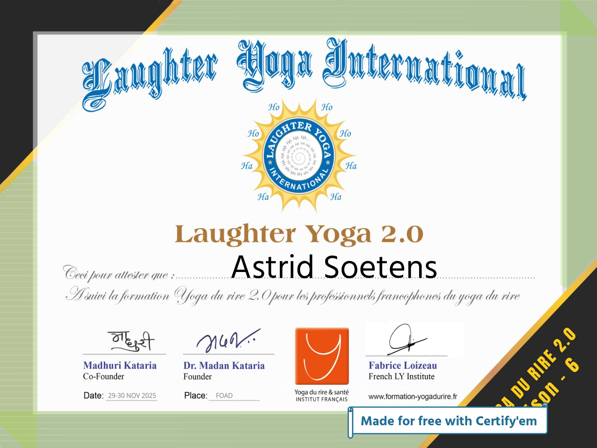

Diplômes & certifications
Un parcours certifié, une passion pour le bien-être par le rire
Des certifications reconnues
Astrid Soetens suit régulièrement des formations auprès d'organismes internationaux et français pour vous offrir des séances de yoga du rire de qualité, sécurisées et adaptées à tous les publics.

Module complémentaire sous l’égide du Dr Madan Kataria et Fabrice Loizeau. Maîtrise des outils ludiques réactualisés, animation experte et accompagnement bienveillant des pratiquants.

Formation avancée destinée aux professionnels francophones du yoga du rire. Approfondissement des techniques de rire sans raison, animation de groupes élargis et protocoles anti-stress niveau expert.

Formation spécifique pour animer des ateliers en milieu professionnel : cohésion d'équipe, gestion du stress, communication bienveillante. Une approche validée pour booster la QVT.

Certification enregistrée au Répertoire Spécifique (n°SRS6378). Travail sur la présence, la gestuelle, l’improvisation et la libération de l’expression corporelle – un atout précieux pour dynamiser les séances de yoga du rire.

Certification complémentaire sur les dynamiques de groupe et l’intégration du rire dans les environnements à haute pression (entreprises, hôpitaux, collectivités). Méthodologie avancée.
« Chaque formation est une nouvelle opportunité de mieux accompagner les personnes vers la joie, le lâcher-prise et une santé épanouie. Le yoga du rire est une discipline vivante, je me forme en continu pour partager des outils toujours plus pertinents. »
Une approche certifiée & humaine
Les certifications obtenues auprès de Laughter Yoga International (Dr Madan Kataria) et de l’Institut Français du Yoga du Rire garantissent des séances structurées, sécurisées et scientifiquement validées. Astrid Soetens est également référencée pour intervenir en entreprise, en collectivité et en individuel avec des protocoles adaptés à chaque public.